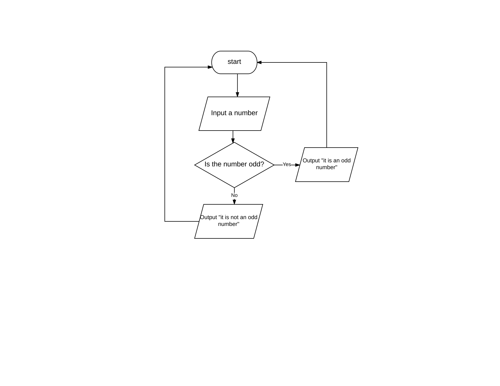

Break Down a Problem
1 Decomposition
Learn It - divide and conquer
- In the last lesson we looked at how to use structured English to describe specific steps to solve a problem.
- Sometimes, the problem is complex or seemingly complex. A common approach to solve a complex problem is to break down the problem into smaller, easier to solve problems. Afte we solved each of those smaller problems, the complex problem is solved.
- The above approach to problem solving is called divid-and-conquer.
- In computer science, to breaking down a problem into smaller, easier to solve problems is called decomposition.
- Let's try decomposition on the following not so complex problem:
Write a program such that when a user inputs a number, the program will output it is an even or an odd number.
- To break down the above problem, we are going to use flowchart to help us.
- Flowcharts are very useful in visualising how algorithms work.
2 Algorithms with Flowchart
Learn It - flowcharts
- A flowchart is a type of diagram that represents an algorithm, workflow or process, showing the steps as boxes of various kinds, and their order by connecting them with arrows.
- Each shape represent some steps in the algorithm:

- The following is a simple example of using flowchart to describe the steps to a simple problem of determing if an user's input numbers are odd or not.

- The above problem has been decomposed into three parts:
- a user input a number
- determine if the numbe is even or odd
- output the appropriate message depending on the above step
Try It
Write a computer game that allows a user to guess the number that is picked by a computer. If the user guessed the number, the user is declared a winner. If the user guessed incorrectly, the computer will tell the user if the guess is too high or two low.
- Try your decomposition skill with the above problem.
- The first few steps have been started for you:
- computer pick a number
- a user input a number
Badget It - Silver
- Finish decomposing the problem by finishing all steps required to reach a solution.
- Create a flowchart using appropriate symbols for your steps.
- Upload both your steps and flowchart to www.bournetolearn.com
3 Algorithms with Pseudo-code
Learn It
- Pseudo-code is similar to plain English but in a structured to describe the specific steps involved to solve a problem.
- Although pseudo-code does not have a fixed syntax, it should contain a set of instructions that are easy to follow by using appropriate indentations and nested indentations.
- The example below is the psuedoc-deo for an algorithm of guessing the number game before.
generate a ramdom integer and store it in a variable A Ask user for an input and store in a variable B if B > A: output "Too high" if B<A: output "Too low" if B=A: output "You guessed it"
- Here is another version of the same algorithm written in different psuedo-code.
A= a ramdom integer output "Please guess a number" B = user input if B > A: output "Too high" if B<A: output "Too low" if B=A: output "You guessed it"
Badge It - Gold
- We all know the game of rock, paper, scissors.
- Try to decompose the game into smaller steps.
- Create an algorithm in psuedo-code for this game and upload.
4 Abstraction
Learn It
- Abstraction is one of the four cornerstones of Computer Science. It involves filtering out – essentially, ignoring - the characteristics that we don't need in order to concentrate on those that we do. For example, in the guess the number game, we filtered out the detail on how the computer picks a random number.
- By leavinng out the unneeded information, we can focus on what is essential to solve the problem.
- It is part of computational thinking which allows us to look at a problem in ways which are easier to deal with.
- Watch the following video showing how abstraction was used to create improved versions of the London Underground Tube Map. Keep notes of what information was kept or removed from the London Tube Map.
Badge It - Literacy
- Upload your notes of what information was kept or removed from the London Tube Map.
- Using the software of your choice to create a User Guide on how to decompose a problem, including an example.
Badge It - platinum
- We have used flowchart to present a solution on checking if a number is even or odd.
- We also used psuedo-code to present a solution on guessing the number game.
- To gain this badge, you need to implement a solution using Python to one of the two problems.
hints:
- for problem 1, you need to know how to tell if a number is even or odd
- for problem 2. you need to know how to use a random module in Python to generate random number.